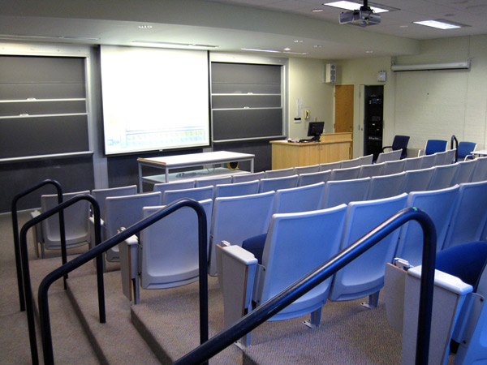
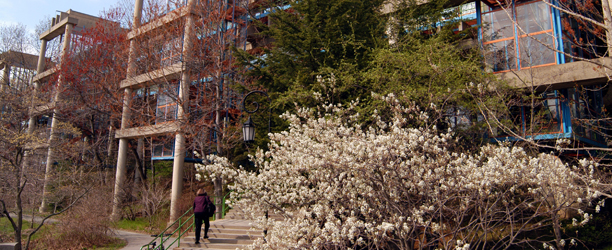
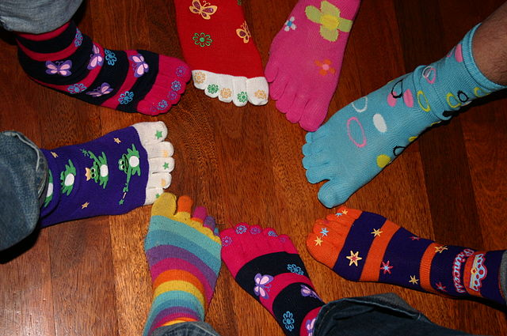

The Wellesley
College Completely Silly Serious International
Conference and Symposium On Computer Science,
CSICSOCS
(pronounced "Sick
Socks!!"), is a premier forum for cutting-alleged
Computer Science research.
The CSICSOCS technical program comprises multiple tracks. All submissions are due by the end of the conference.
We solicit student and faculty speakers to give talks of 2-5 minutes on their original alleged "Research" in "Computer Science." A good talk is, above all, silly, barely to moderately prepared, and, if possible, vaguely related to computer science. See the CFP for details.
Too busy to prepare your talk? Give a slide karaoke talk. We choose the topic and slides. You give the talk.
Enthusiastic audience participation is encouraged.
The main conference track is scheduled for 2:00pm-3:30pm in Room 396 of the Wellesley College Science Center. Complimentary light snacks are provided.
Early bird deadline: Sunday 11:59pm. $0 online RSVP.
On-site. Free if you're wearing sick socks. $0 for those with boring socks. Just show up and laugh!
Wellesley students may arrange accommodations and meals in residence and dining halls, located within walking distance of the conference venue. Contact Residential Life and mention "CSICSOCS" for the undiscounted conference rate.
Send general questions to Ben Wood (benjamin.wood@) and inquiries about disability accommodations to Jim Wice (jwice@).
Begin preparing your talk.
Early bird registration deadline
CSICSOCS research and karaoke tracks, SCI 396.
Talk proposals due by end of conference.
Random award ceremony.
Dear Silly Serious Computer Scientists of the College Science Center and beyond,
On behalf of the CSICSOCS 2017 organizing committee, I am
pleased to invite you to the Second Annual Wellesley College
Completely Silly Serious International Conference
and Symposium On Computer Science (CSICSOCS 2017, pronounced:
"Sick
Socks!!"), to be held on Monday, May 8, 2017, in the
Wellesley College Science Center Room 396.
CSICSOCS is a premier forum for cutting-alleged "Computer Science research." Translation: Take a break during reading period to laugh and share silly talks with fellow computer science students and faculty!
We are currently soliciting student and faculty speakers to give talks of 2-5 minutes in two conference tracks: Research Talks and Slide Karaoke Talks. All submissions must be received by the end of the conference to ensure full consideration. This is a hard deadline.
Research Talks should describe original "Research" in "Computer Science," demonstrating a notable advance in the state of the art. Translation: A good talk is, above all, silly, barely to moderately prepared, and, if possible, vaguely related to computer science.
Slide Karaoke Talks offer researchers the opportunity to present exciting new work even if they cannot be bothered to do that work or prepare a talk themselves. Translation: Are you pressed for time and unable to prepare the talk you wanted to give? No worries, come give a slide karaoke talk. We choose the topic and slides, you give the talk!
Submit talk proposals, in the form of a message in a bottle, or a paper napkin note by carrier pigeon, to SCI E128, Wellesley College, or through the registration and submission system, no later than the end of the conference. Proposals for research talks should include between 0 and 63 words, optionally related to your topic (and optionally related to each other). Proposals submitted ahead of time will be fast-tracked for acceptance through a prestigious process of double-blind review by a committee of goslings, raven chicks, and fox kits, complete with an official s(qu)eal of approval and a listing in the conference program. On-site talk proposals will be accepted on a first-come first-serve basis as time allows.
Topics of interest to the CSICSOCS community include anything novel and vaguely "Computer Science" related. Examples include – but are not limited to – the following nascent topics and classical works:
I look forward to an exciting technical program at this year's CSICSOCS. On behalf of the organizing committee and our sponsors, we hope to see you there and we extend our best wishes for the end of the semester!
Cordially yours,
Ben Wood
General Chair
CSICSOCS 2017
CSICSOCS is hosted this year in the graciously appointed room SCI 396 at the elegant Wellesley College Science Center.


Ben Wood, Wellesley College Computer Science
Rita Purcell, Wellesley College Computer Science
With thanks for inspiration to UW CSE PoCSci: Potentially Computer Science.

Photo credit: CC-BY S B@flickr.com